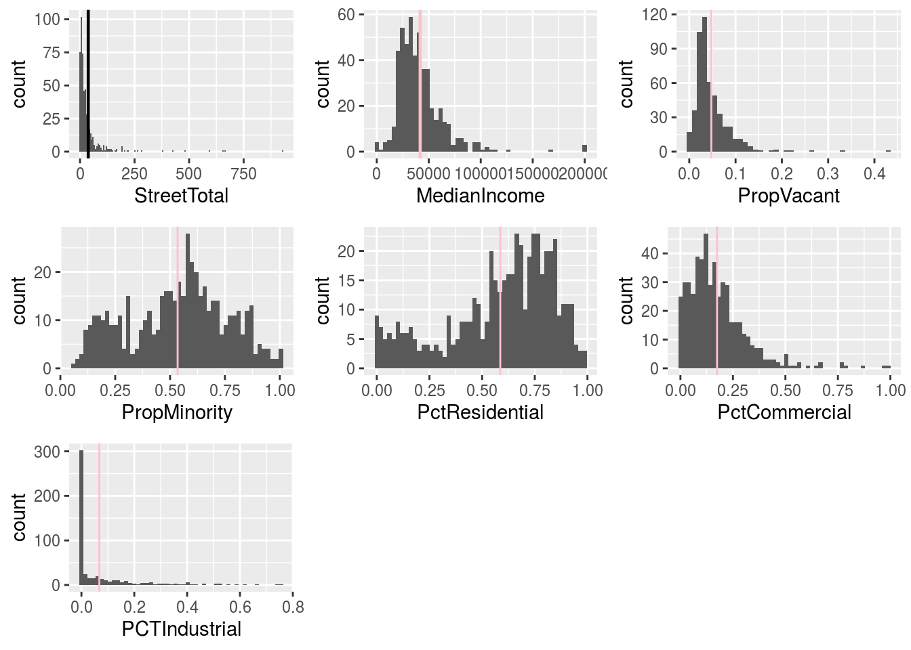
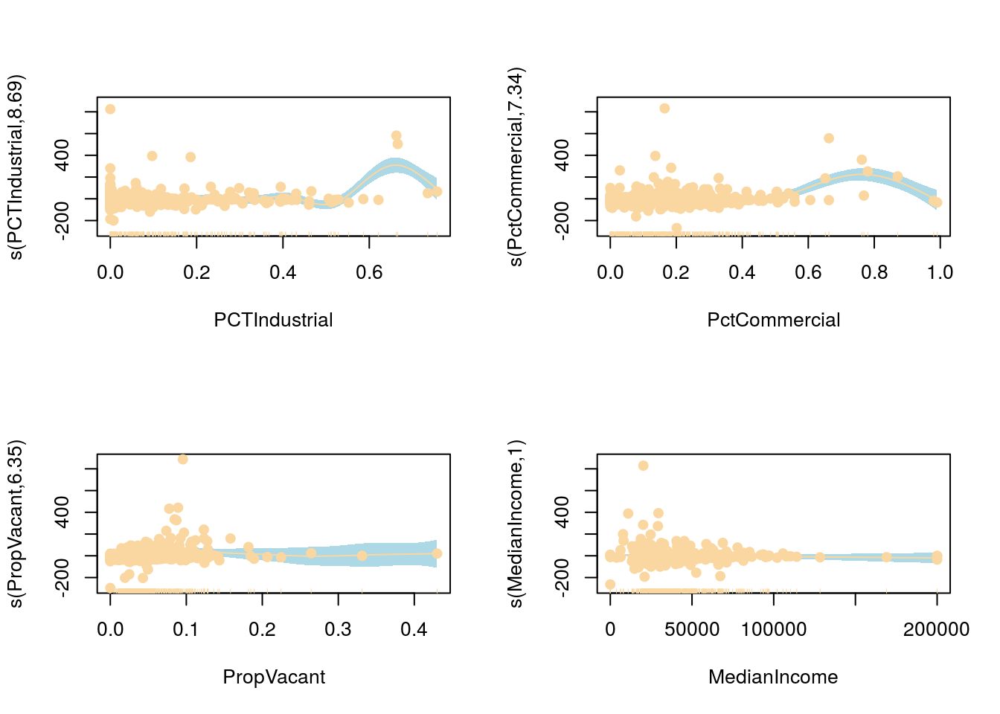
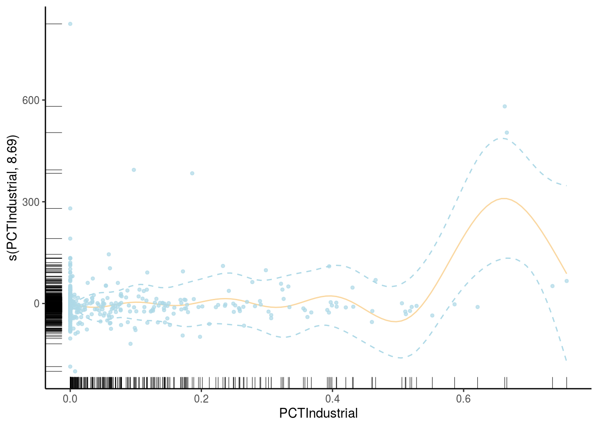

Central to the debate of ethical algorithm design is a consideration of mis-classification costs for supervised learning methods. By building in asymmetric costs through sampling, machine learning engineers can take heed of policy makers’ desired cost-ratios. In this project, I investigate how sample size selection affects cost asymmetry. I build a random forest algorithm to predict death rates of coronavirus patients in South Korea using the Kaggle COVID-19 Open Research Dataset.
Data cleaning: tidyverse Random Forest: R (randomforest)
Sample code and charts below. See GitHub repo for full code and analysis.
#install.packages("randomForest")
#install.packages("kableExtra")
library(randomForest)
library(kableExtra)
library(tidyverse)
# load("data/coronavirus_data.Rdata")
# set.seed(222)
# rf <- randomForest(outcome~Sex + Age + Province + Source +
# Order, data=coronavirus_data,
# importance = TRUE,
# sampsize = c(21,12,26))
dataframe <- read.csv('data/COVID_random_forest_table.csv')
names(dataframe)[1] <- "Outcome1"
names(dataframe)[2] <- "Outcome2"
names(dataframe)[3] <- "Outcome3"
names(dataframe)[4] <- "Classification Error"
dataframe <- dataframe %>%
mutate(`Classification Error` = round(`Classification Error`, 2))
dataframe <- dataframe %>%
mutate(`Classification Error` = cell_spec(`Classification Error`, "html", color = ifelse(`Classification Error`>
0.5, "green",
"black"))) %>%
mutate_if(is.numeric, function(x) {
cell_spec(x, bold = T)
}) %>%
mutate(position = c("top", "top", "top"),
text = c("84% Classification Accuracy", "54% Classification Accuracy", "87% Classification Accuracy"),
name = c("0.16", "0.46", "0.13"))
dataframe <- dataframe %>%
mutate(position2 = c("top", "top", "top"),
text2 = c("In response to policy makers' request that a false negative in death classification be 20 times worse than a false positive release classification, deceased values are oversampled, at 21 out of 32, to avoid false positive releases. Due to a large imbalance in the outcome distribution, however, (less than 2% of patients die from the disease), a strict adherance to this cost ratio affects the cost ratios of the other categories.", "The cost ratio of a false negative death to a false positive isolation is less severe, at 10:1. A larger ratio of 20:1 is achieved due to the high number of people isolated, and under-sampling from this parameter.", "A false negative release is about as risky as a false positive isolation, according to policy makers. The ratio intended was 2:1, and the actual result form sampling was 1.2:1. This tradeoff is the decision with the least repercussions, according the stakeholders"),
name2 = c("Deceased", "Released", "Isolated"))
dataframe$`Classification Error` <- cell_spec(
dataframe$name,
popover = spec_popover(
content = dataframe$text,
title = NULL,
position = dataframe$position
))
dataframe$`Confusion Table`<- cell_spec(
dataframe$name2,
popover = spec_popover(
content = dataframe$text2,
title = NULL,
position = dataframe$position2
))
dataframe <- dataframe %>%
select(`Confusion Table`, Outcome1, Outcome2, Outcome3, `Classification Error`)
kable(dataframe, escape = FALSE, caption = "Table 1 classifies the OOB estimates. The algorithm's forecasting accuracy improves upon all previously stated baseline percentage forecasts, which were 1.51%, 85.6%, and 12.93% for the deceased, released, and isolated, respectively. <strong>Scroll over the table</strong> to learn more about how sampling affects cost ratios.") %>%
kable_styling("striped", full_width = FALSE)| Confusion Table | Outcome1 | Outcome2 | Outcome3 | Classification Error |
|---|---|---|---|---|
| Deceased | 26 | 1 | 5 | 0.16 |
| Released | 10 | 149 | 115 | 0.46 |
| Isolated | 105 | 130 | 1578 | 0.13 |
A hard to swallow assumption in linear models is that, at all values an instance has in a particular feature, increasing the value by one unit will have the same effect across the board. General Additive Models, on the other hand, give the analyst an opportunity to analyze fluid changes in variable features. Gam models can suffer from poor interpretability, and strong assumptions will have to be made regarding the data generation process. In a project using census data in the city of Los Angeles, one of these issues comes to light: the loess smoother perform poorly at the upper boundaries of data.
Data cleaning: tidyverse General Additive Models: mgc, mgcViz and gam
Sample code and charts below. See GitHub repo for full code and analysis.
library(tidyverse)
library(DataExplorer)
library(gridExtra)
#inspect data
load("data/NewHomeless.rdata")
homeless <- homeless
#count the missing data values
# sapply(homeless, function(x) sum(is.na(x)))
# #inspect missing values
# missing <- homeless %>%
# filter(is.na(PropVacant))
#impute the missing data
homeless[is.na(homeless)] = 0
#cleanign up the mis coded
# Adjust values of PropMinority mis-coded as "100" instead of "1.0"
library(dplyr)
homeless <- mutate_at(homeless, vars(PropMinority), list(~ ifelse( . > 1.0, 1.0, .)))
# Convert values of "Pct" variables to be in decimal scale
homeless <- mutate_at(homeless, vars(PctResidential:PCTIndustrial), list(~ .*.01))
# Recode four NAs in PropVacant as zero owing to how few residential dwellings exist in
# those tracts
homeless <- mutate_at(homeless, vars(PropVacant), list(~ ifelse(is.na(.)==T, 0, .)))
#recode the industrial
homeless <- homeless %>%
mutate(Industrial = ifelse(PCTIndustrial >0, 1, 0))
####################
#Step 2: Univariate Statistics
library(DataExplorer)
#pairs
# pairs(homeless)
# #correlation
# plot_correlation(homeless, type = 'continuous','Review.Date')
#Street Total
par(mfrow = c(1,2))
p1 <- ggplot(aes(StreetTotal), data = homeless) +
geom_histogram(binwidth = 6) +
geom_vline(xintercept = mean(homeless$StreetTotal), size = 0.8)
p2 <- ggplot(aes(MedianIncome), data = homeless) +
geom_histogram(bins = 50) +
geom_vline(xintercept = mean(homeless$MedianIncome), colour = "pink", size = 0.8)
#Prop Vacant
p3 <- homeless %>%
ggplot(aes(PropVacant)) +
geom_histogram(bins = 40) +
geom_vline(xintercept = mean(homeless$PropVacant), colour = "pink")
#Prop Minority
p4 <- homeless %>%
ggplot(aes(PropMinority)) +
geom_histogram(bins = 50) +
geom_vline(xintercept = mean(homeless$PropMinority), colour = "pink")
#Pct Residential
p5 <- homeless %>%
ggplot(aes(PctResidential)) +
geom_histogram(bins = 50) +
geom_vline(xintercept = mean(homeless$PctResidential), colour = "pink")
#PctCommercial
p6 <- homeless %>%
ggplot(aes(PctCommercial)) +
geom_histogram(bins = 50) +
geom_vline(xintercept = mean(homeless$PctCommercial), colour = "pink")
#PctIndustrial
p7 <- homeless %>%
ggplot(aes(PCTIndustrial)) +
geom_histogram(bins = 50) +
geom_vline(xintercept = mean(homeless$PCTIndustrial), colour = "pink")
library(gridExtra)
grid.arrange(p1, p2, p3, p4, p5, p6, p7, nrow = 3)
#set seed at 4000
# Bring in data and create initial training and test datasets
set.seed(4000)
df <- homeless
index <- sample(1:nrow(df), (nrow(df))/2, replace = F)
Train <- na.omit(df[index,]) # Training data
Test <- na.omit(df[-index,]) # Test data
##coming to the right model:
library(leaps)
All1 <- regsubsets(StreetTotal ~ MedianIncome + PropMinority +
PropVacant+
PctResidential+
PCTIndustrial +
PctCommercial +
Industrial, data = Train)
# All1
# summary(All1)
Model2 <- lm(StreetTotal ~
PropVacant+
Industrial +
(PropVacant:Industrial), data = Train)
# summary(Model2)
## Generalization error ##
# Specify a model on the testing data
Model2 <- lm(StreetTotal ~
PropVacant+
Industrial +
(PropVacant:Industrial), data = Test)
# summary(Model2)
#estimate the fitted values on the testing data, and the generalization error
preds <- predict(Model2, newdata = Test) # New fitted values derived from the test data
GE <- var(Test$StreetTotal - preds) # Estimate of generalization error (the variance of the residuals when
# GE
# sqrt(GE)
# Bootstrap a confidence interval for the generalization error
bootstrap_genError <-
function(x) {
bootstrapped_genErrors <- 0
for (i in 1:1000) {
index <- sample(1:nrow(x), nrow(x), replace = T)
sample_Test <- x[index,]
sample_Test_preds <- predict(Model2, newdata = sample_Test)
bootstrapped_genErrors[i] <- var(sample_Test$StreetTotal - sample_Test_preds)
}
return(bootstrapped_genErrors)
}
bootstrap_results_ge <- bootstrap_genError(Test)
# Check generalization error bootstrap results
# mean(bootstrap_results_ge, na.rm = T)
# summary(bootstrap_results_ge)
# hist(bootstrap_results_ge, breaks = 20)
# qqnorm(bootstrap_results_ge)
# sd(bootstrap_results_ge)
# quantile(bootstrap_results_ge, probs = c(.025,.975))
# plot(density(bootstrap_results_ge))
# qqnorm(bootstrap_results_ge)
#use robust sandwich standard errors in the sandwich package
# install.packages("sandwich")
library(sandwich)
# vcovHC(Model2, type = "HC")
# sandwich_se <- diag(vcovHC(Model2, type = "HC1"))
# sqrt(sandwich_se)
#then can get the confidence interval limits of these
# coef(Model2) - 1.96*sandwich_se
# coef(Model2) + 1.96*sandwich_se
library(gam)
library(mgcv)
library(leaps)
homeless2 <- homeless %>%
filter(MedianIncome > 60000 & PropVacant < .10)
##MODEL 1
out3 <- gam(StreetTotal ~
s(PCTIndustrial) +
s(PctCommercial) +
s(PropVacant) +
s(MedianIncome), data = homeless, family = gaussian)
# summary(out3)
par(mfrow=c(2,2))
plot(out3, residual = T, cex = 1, pch = 19, shade = T, shade.col = "light blue",
col = "#FAD7A0")
library(mgcViz)
b<- getViz(out3)
o <- plot( sm(b, 1) )
o + l_fitLine(colour = "#FAD7A0") + l_rug(mapping = aes(x=x, y=y), alpha = 0.9) +
l_ciLine(mul = 5, colour = "light blue", linetype = 2) +
l_points(shape = 19, size = 1, alpha = 0.7, color = "light blue") + theme_classic()